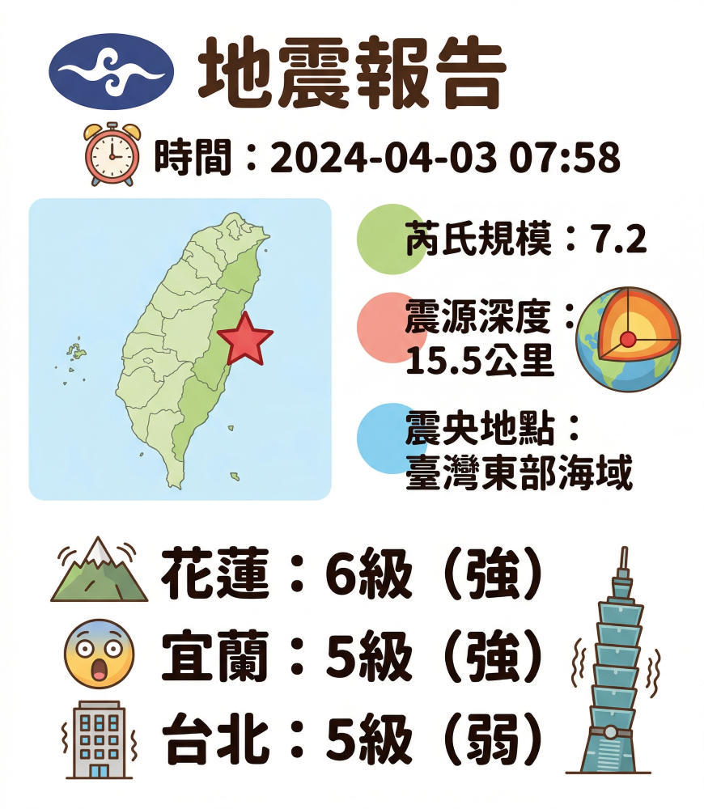
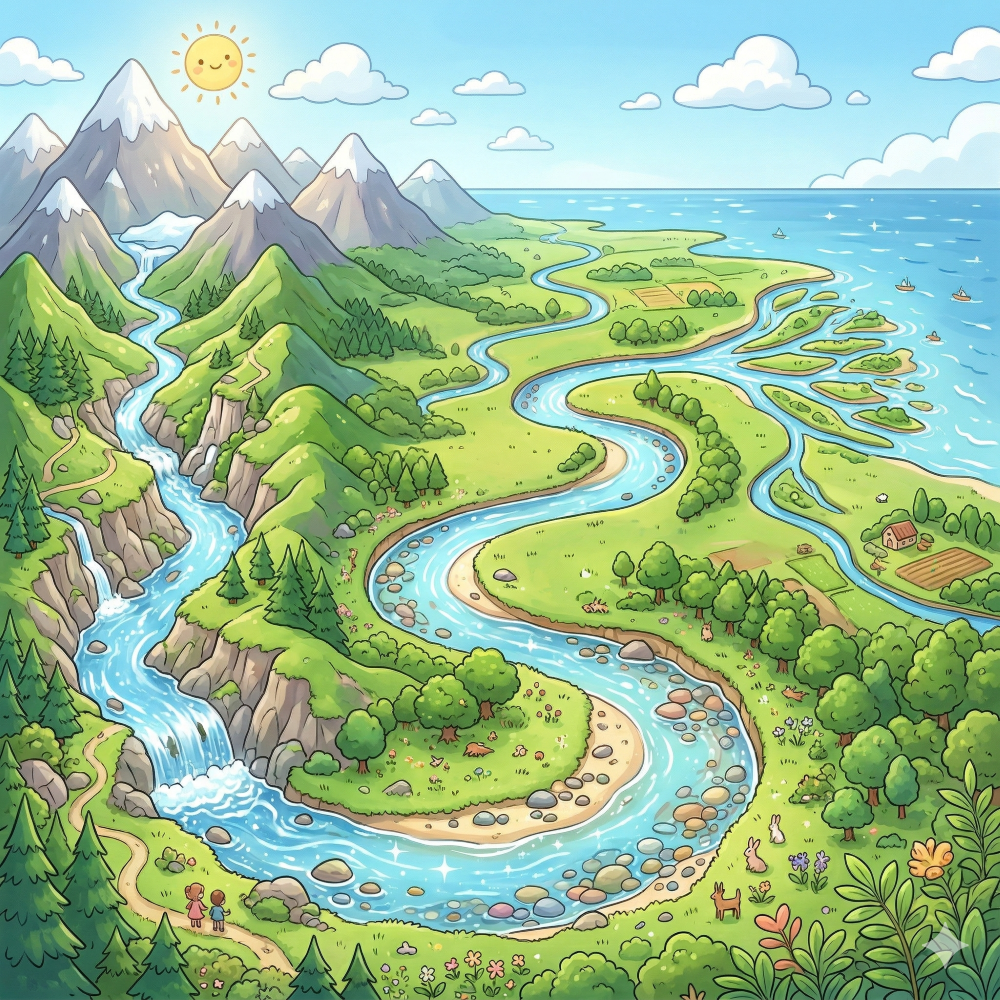
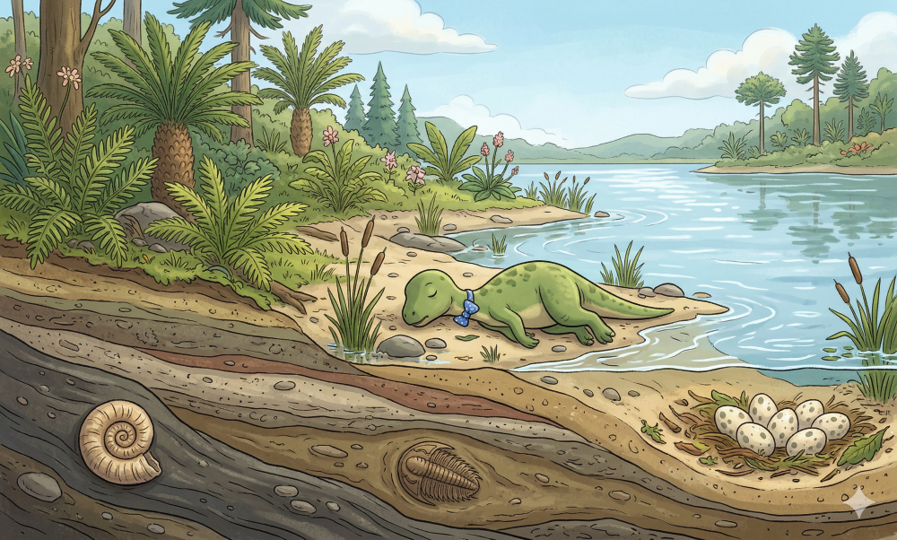
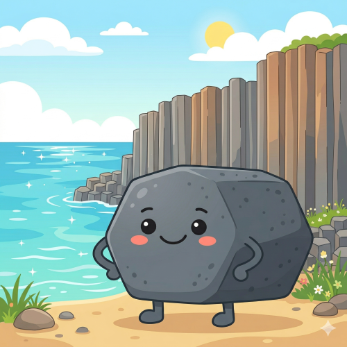

📡 氣象署地震報告

任務指示：
報告上有幾處被污漬遮住了！請觀察左邊閃爍的污漬位置，並在下方點選對應的正確專有名詞。
請先點擊左側閃爍的污漬
專有名詞
這裡會顯示該名詞的詳細說明。
請選擇一個觀測站開始你的探險，解開地球的奧祕。
地表環境組成與改變地貌的重要力量。
探索流水與波浪如何雕刻出多變的地形。
認識岩石分類、礦物特徵以及化石的祕密。
認識天然災害、地震避難防災與地景保育。
請由下往上滑動拉桿
點擊查看說明，再點擊(或拖曳至)左側分類。
請點選或將游標移至卡片上。
調整土堆的坡度，觀察水流三大作用（侵蝕、搬運、堆積）的變化！
💡 結論：坡度越陡，水流速度越快，侵蝕與搬運作用越強，溝紋較深；坡度越緩，水流越慢，堆積作用較強。

請點擊左側地圖上的標記
查看詳細地形解說
請選擇上方岩石類別
這裡會顯示該岩石的成因說明。
這裡會顯示範例說明。
點擊上方按鈕開始鑑定
說明文字載入中...
左右拖曳滑桿觀察硬度變化 (1 最軟 ~ 10 最硬)
請點擊下方，選出硬度較高（較硬）的物件！
化石的形成非常不容易！推動右方的時光拉桿，觀察古生物是如何經過漫長歲月變成化石的吧！
恐龍倒在河川、湖泊邊緣或海洋中。

請由下往上推動拉桿
拿起你的考古刷！請在下方的泥土區按住滑鼠並拖曳（或手指滑動），輕輕刷開泥土，看看底下藏著什麼化石！
生物的骨骼、牙齒或被樹脂包覆的遺骸，保留了原有的真實形體。
生物遺體腐爛後消失，但在岩漿或泥沙中留下了立體的凹陷壓痕。
生物活動時留下來的腳印、爬痕，或者是糞便變成石頭的產物。

你發現了：???
請參考左側說明，它屬於哪一種？
要進入解密中心，請先從下方選出正確的「保命 3 步驟」：

報告上有幾處被污漬遮住了！請觀察左邊閃爍的污漬位置，並在下方點選對應的正確專有名詞。
請先點擊左側閃爍的污漬
這裡會顯示該名詞的詳細說明。
地震隨時可能發生，請從右方選出 8 件 最重要的生存物資放入背包中！
（點擊物品即可放入或拿出）
你帶齊了最重要的生存物資。出發避難前，別忘了最重要的卡片：
💡 1991 專線怎麼用？
當發生大地震，電話大塞車打不通時，可以撥打 1991，輸入親友的電話號碼進行語音留言，親友也能透過這個號碼聽到你報平安喔！
1. 選擇探險縣市：
點選右上角查看圖片！